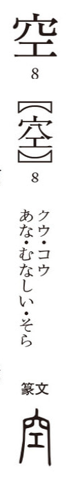

空

Kun: sora, a(ku), kara | On: kuu
sky ・ empty ・ void
Explanation
In its earliest form, 空 combines 穴 (cave, opening) with 工 as a phonetic. The element 工 does not mean “work” here but conveys the sense of something gently arched or spanning across, as seen in words like 虹 (arch of a rainbow), 杠, or 江. 空 thus depicts a dome-like hollow, resembling a vast opening where the four sides curve down loosely, like the overarching canopy of the sky. From this image, 空 came to signify not only a cavity or opening but also the spacious, vaulted expanse of the heavens.